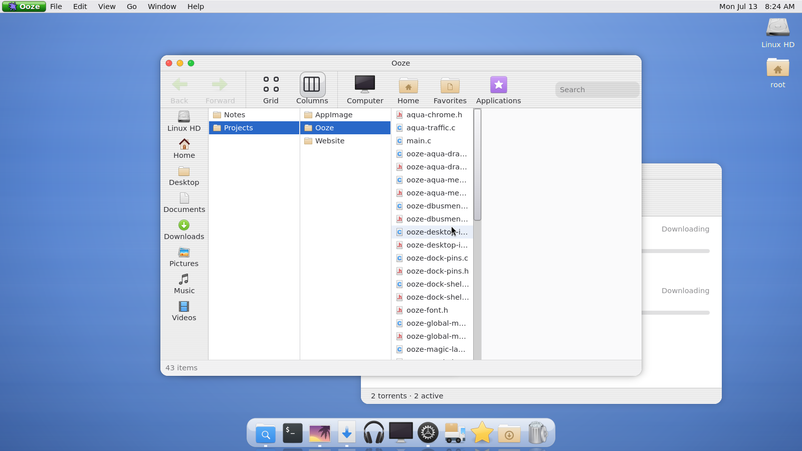

A desktop that flows.
Ooze is a Wayland desktop environment built on Mutter — a cohesive Aqua-inspired shell with a global menu bar, floating dock, and first-party GTK4 apps that share one visual system.
One design language, everywhere
Aluminum surfaces, subtle pinstripes, custom traffic lights, and automatic light / dark mode — from the compositor down to every app.
Global menu bar
App menus from native GTK4 and classic GTK3 / Xwayland apps, with shell File / Edit / View / Go / Window / Help menus.
Floating dock
Running-app indicators, focus and minimize on click, and a magic-lamp minimize animation into the dock.
Mutter-based Wayland
A real Wayland compositor built on Mutter 18 — with Xwayland support, edge tiling, and desktop icons.
Signature window frame
Header bar, traffic lights, drag and edge-resize grips — shared by every first-party app.
Shared drawing library
Surfaces, pinstripes, separators, and button finishes from one palette, in light and dark.
Foreign apps welcome
Optional WhiteSur theme for non-Ooze apps — launch-scoped, never a session-wide override.
First-party apps
A complete set of system apps, all wearing the same Gel.
Spot
File manager with places sidebar, column (Miller) and grid views, and theme-aware surfaces.
Ooze Command
VTE terminal with tabs, Ooze Gel header bar, and global menu support.
Ooze Eye
Lightweight image viewer — the default handler for images in the nest.
Ooze King
System apps launcher: one place to open every Ooze app.
Ooze Torrent
BitTorrent client linking a static libtransmission, with pause / resume / magnet support.
Ooze Monitor
Display layout and resolution via Mutter’s DisplayConfig D-Bus API.
Ooze Ear
Sound preferences backed by PipeWire.
Ooze Pak
Flatpak package browser for installing more software.
About This Computer
System overview with the Ooze look.
Screenshots



Get Ooze
Runs on Ubuntu 26.04 (Mutter 18). Try it nested first — it never replaces your login desktop unless you ask it to.
1 · Try it — AppImage
Single file, nested session. Host Mutter 18 required.
# download from GitHub Releases, then:
chmod +x Ooze-*-x86_64.AppImage
./Ooze-*-x86_64.AppImage2 · Build from source
# dependencies (Ubuntu 26.04)
sudo apt install meson ninja-build pkg-config libmutter-18-dev \
libgtk-4-dev libadwaita-1-dev libcairo2-dev libvte-2.91-gtk4-dev \
libgdk-pixbuf-2.0-dev libpng-dev
# build and run a nested session
meson setup build
ninja -C build
./run-devkit.sh3 · Install — native session
Build a .deb, install it, then pick “Ooze” at the GDM login screen.
./scripts/build-deb.sh
sudo apt install ./dist/ooze_0.1.0_amd64.deb